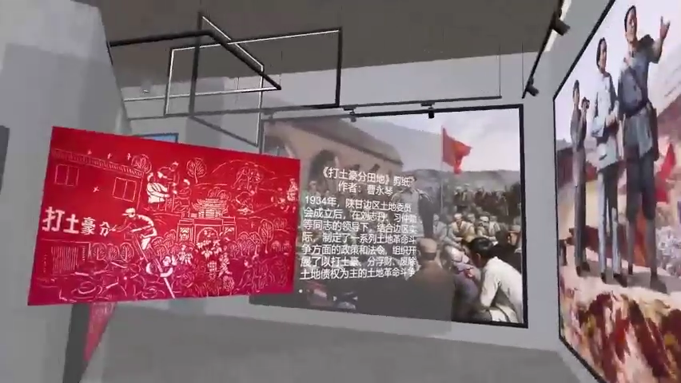

Immersive and embodied storytelling
I design interactive experiences for VR, AR, and spatial media, focusing on atmosphere, perception, and emotional pacing.
XR · Spatial/Emotional Design · Digital Humanities
Focus
My work sits between visual communication, immersive media, and cultural inquiry, with a focus on how spatial and interactive systems can produce meaningful emotional experiences.
I design interactive experiences for VR, AR, and spatial media, focusing on atmosphere, perception, and emotional pacing.
I explore how poetry, historical memory, and place-based stories can be transformed into accessible multisensory experiences.
I use AI-assisted workflows to support concept generation, image making, storytelling development, and rapid prototyping.
I investigate how sound, color, interaction, and visual rhythm shape emotional experience in physical and digital environments.
Highlights
A concise overview of the academic profile, recognitions, and public-facing outcomes that shape my current research and design practice.
Currently pursuing an M.A. at Wales College, Lanzhou University, with a GPA of 4.31/5.0 and ranked 1 out of 39.
My research connects digital humanities, interactive narrative, spatial emotion, and visual communication, with publications spanning both design and cross-disciplinary inquiry.
Recognized for strong work in visual communication and creative practice through the Future Designer NCDA competition.
The digital media piece Endless Body was selected for the 2025 Midsummer Art Season in Beijing, and the AIGC work Virgin Realm was commercially licensed and exhibited.
Recipient of multiple awards including a National Silver Award in the China Good Creativity and National Digital Art Design Competition.
Active in cross-disciplinary design, animation, and creative technology communities through ASIFA International Animated Film Association.
From research insight to immersive form.
I begin by observing place, audience, and narrative structure to identify what the experience should reveal.
I translate research findings into interaction logic, content hierarchy, and spatial storytelling opportunities.
I use sketches, interface layouts, motion studies, Unity scenes, and 3D models to test storytelling, usability, and emotional pacing.
I iterate through feedback, improve clarity and coherence, and prepare the project for exhibition, portfolio, or further research.
I am a design researcher working across AR, VR, and interactive systems, focusing on how temporality, perception, and cultural memory shape immersive experiences.
My work explores how digital technologies can transform passive viewing into active exploration.
Through projects such as AR park experiences and VR embodied environments, I investigate how users construct meaning through movement, rhythm, and interaction.
With a background in design and ongoing research in HCI, I am particularly interested in AI co-creation, uncertainty in creative systems, and spatial storytelling.
Explore my work through a spatial project field

Multisensory interaction for classical poetry education

Immersive visual development for a national art fund supported project

Digital media work selected for the 2025 Midsummer Art Season in Beijing

Designing for cultural and spatial engagement
For research collaborations, exhibitions, graduate opportunities, and creative technology projects.
Yidan Fan
Berkeley, CA
XR, digital humanities, interactive narrative, cultural memory
Unity, 3D modeling, visual prototyping, interface design
Portfolio site in progress